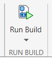
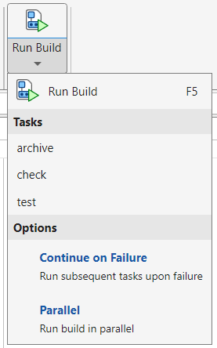
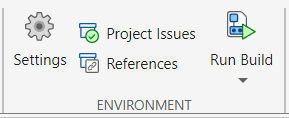

Run Build from Toolstrip
If a build file named buildfile.m is open in
the MATLAB® Editor or if a project contains a build file named
buildfile.m in its root folder, then you can interactively
run the default tasks or a specific task in the build file from the MATLAB Toolstrip. You can also customize your build run by selecting build
options from the toolstrip. For example, you can choose to continue running the
build upon a failure.
This topic shows how to run a build interactively using the Editor or Project tab on the toolstrip.
Run Build in Editor
In your current folder, create a build file named buildfile.m
with three tasks. Create the "check" and
"test" tasks using built-in task classes, and create the
"archive" task using a local task function. For more
information on how to create a build file, see Create and Run Tasks Using Build Tool.
function plan = buildfile import matlab.buildtool.tasks.CodeIssuesTask import matlab.buildtool.tasks.TestTask % Create a plan from task functions plan = buildplan(localfunctions); % Add a task to identify code issues plan("check") = CodeIssuesTask; % Add a task to run tests plan("test") = TestTask; % Make the "archive" task the default task in the plan plan.DefaultTasks = "archive"; % Make the "archive" task dependent on the "check" and "test" tasks plan("archive").Dependencies = ["check" "test"]; end function archiveTask(~) % Create ZIP file filename = "source_" + ... string(datetime("now",Format="yyyyMMdd'T'HHmmss")); zip(filename,"*") end
When you save the build file, the Run section on the Editor tab changes to Run Build and lets you run the tasks in the build file.

In the Run Build section, click . MATLAB displays the command it uses to run the build in the Command Window
and runs the default task in the build file. The build tool first runs the
"check" and "test" tasks because the
"archive" task depends on them. Your results might vary,
depending on the files in your current folder and its subfolders.
>> buildtool
** Starting check
Analysis Summary:
Total Files: 3
Errors: 0 (Threshold: 0)
Warnings: 0 (Threshold: Inf)
** Finished check
** Starting test
...
Test Summary:
Total Tests: 3
Passed: 3
Failed: 0
Incomplete: 0
Duration: 0.40722 seconds testing time.
** Finished test
** Starting archive
** Finished archiveTo run a specific task instead of any default tasks in the build file, open the list of tasks by clicking Run Build on the toolstrip. The list displays the task names in alphabetical order.

Note
If your build file contains task groups, then the list includes those task groups but not the tasks within them. You cannot run individual tasks in task groups from the toolstrip. For more information about task groups, see Create Groups of Similar Tasks.
Run the "test" task by selecting
test under Tasks. MATLAB displays the command it uses to run the task in the Command Window and
runs the "test" task.
>> buildtool test
** Starting test
...
Test Summary:
Total Tests: 3
Passed: 3
Failed: 0
Incomplete: 0
Duration: 0.039725 seconds testing time.
** Finished testCustomize Build Run
You can interactively customize your build run by using the build options under Run Build. The build tool uses the selected options whether you run the default tasks or a specific task in the build file. When you select a build option, the selection persists for the duration of your current MATLAB session.
| Build Option | Description |
|---|---|
| Continue on Failure | Continue running the build upon a build environment setup or task failure. Select this option to run the subsequent tasks upon a failure. Selecting this
option is the same as specifying the
|
| Parallel | Run the build in parallel (requires Parallel Computing Toolbox™). Currently, this option affects only how
Selecting this option is the same as
specifying the |
Run Build in Project
When you open a MATLAB project, the Project tab includes the Run Build button in its Environment section.

If your project root folder contains a build file named
buildfile.m, then you can use the button to interactively run
the default tasks or a specific task in that build file.
If your project root folder does not contain a build file named
buildfile.m, then you can create a starter build file from
the toolstrip in two different ways:
Click and then click Create in the dialog box that appears.
Click Run Build and then select Create build file from the menu.
MATLAB creates a simple build file named buildfile.m in
your project root folder and opens it in the Editor. Use this build file as a
starting point for defining your build. Once your build definition is complete, you
can run your build interactively from the toolstrip.